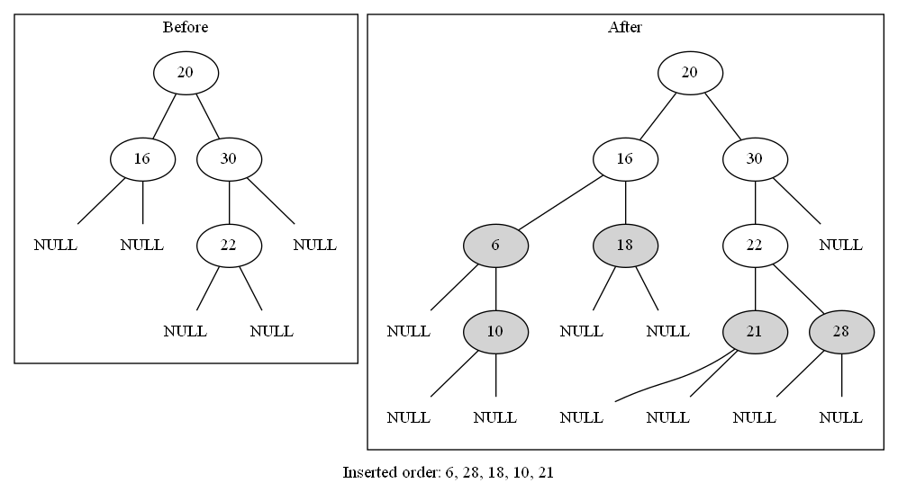

Binary search tree
提供整體資料大小關係的維繫，於是對
search, insert, and delete 的運算，
有優質的時間表現。
Definition
所有node的資料內容是相異的。
左子節點的資料內容比父節點的資料內容小。
右子節點的資料內容比父節點的資料內容大。
左子樹和右子樹也是binary search tree。
code(c)
高度平衡二元樹
稱為
AVL tree
\( |\;\text{左子樹樹高}-\text{右子樹樹高}\;| \leq 1 \)
search time complexity:
\( O(\log n) \)
製成方法:
Insert BSTree
Time complexity:
\( O(h) \), h為樹高

graph
Delete BSTree
待
min-heap